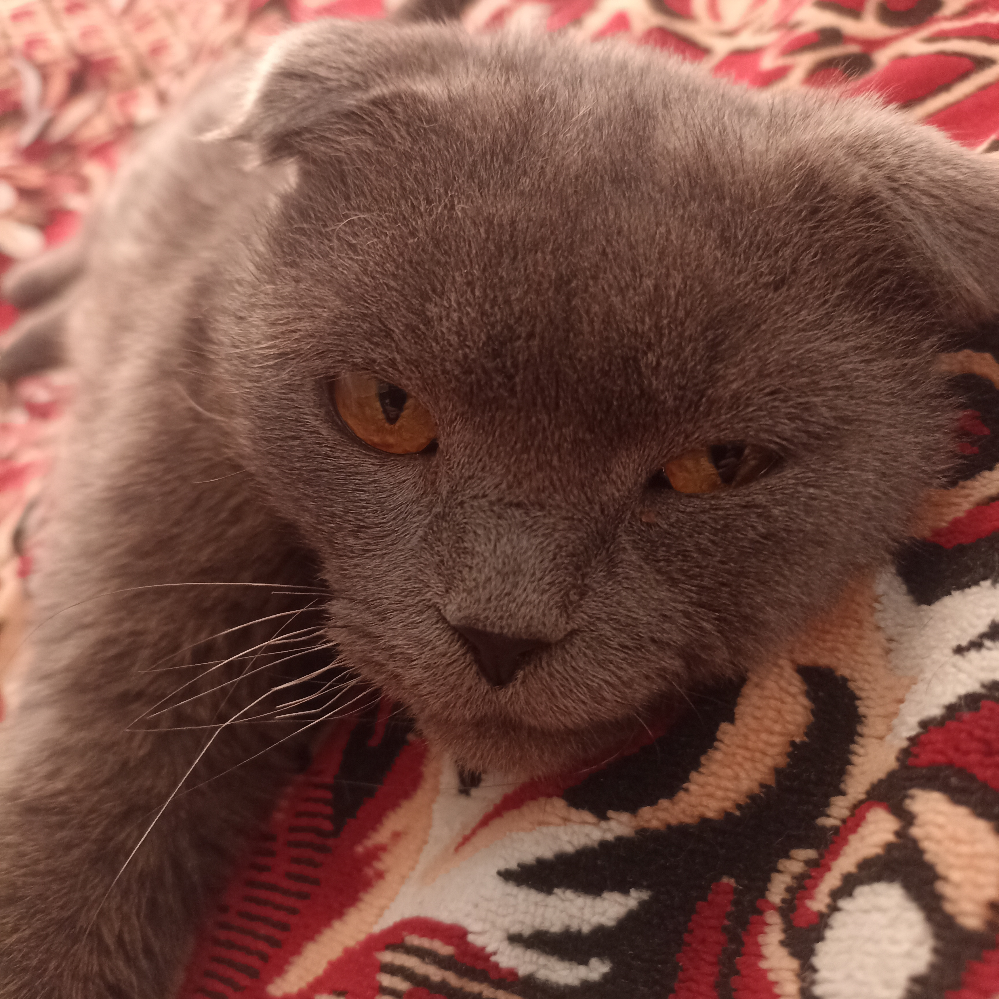
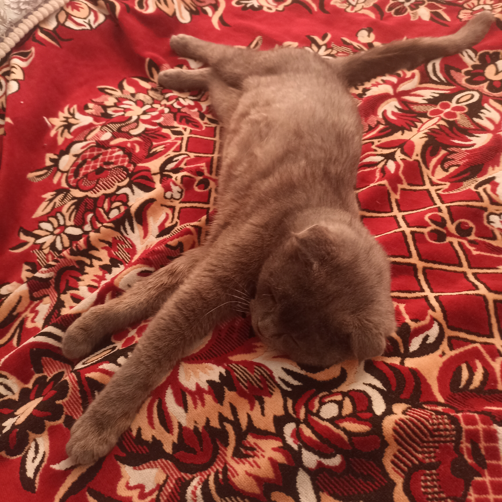

Цей кішара у мене появився у 2020 році. Зараз йому вже скоро буде три роки. Спочатку він стіснявся та боявся нового дому, був благодарний за те, що ми його взяли та кормили. А зараз йому тунець консервований не подобається
Моя мама його часто ругає, та коли я йому даю щось добреньке, то моя мама недовольна каже що не голодний той "гад"
Але вона його теж підгодовує так же само як і я, поки тато мій не баче. Бо татко відразу ж почне казати, тіпа,
"Чі не облізе він!", "Який розбалований став!"

